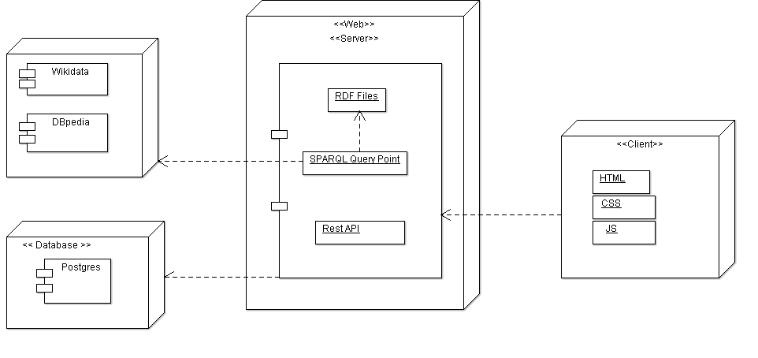
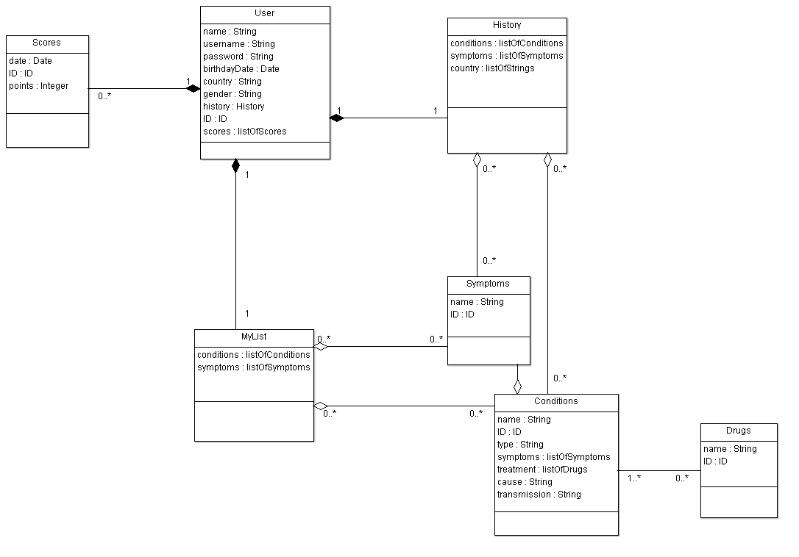
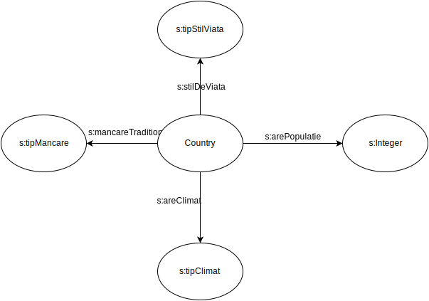
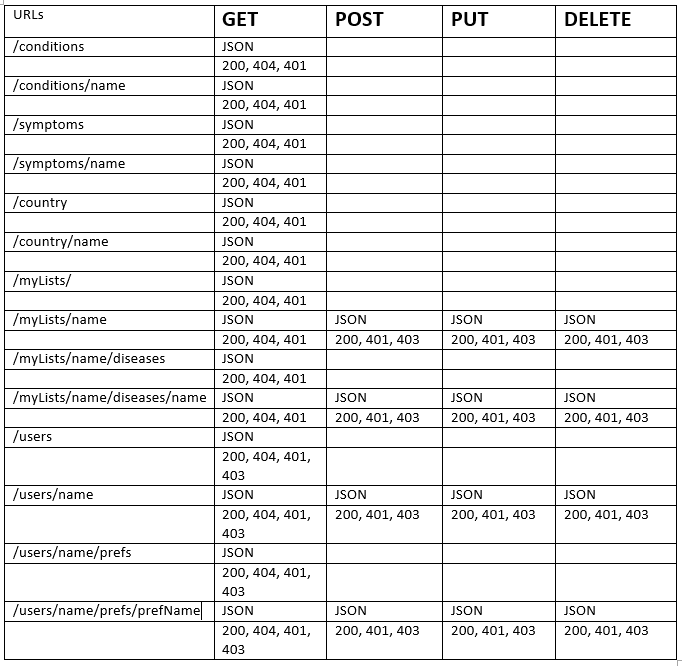

MAd (Medical Web Advisor)
The team
About
MAd is an innovative hypermedia experience that helps middle-/high-school students to learn more about specific medical conditions (common diseases, allergies, food intolerances, obesity factors, disorders, etc). They can learn how these conditions affect the human body or the population of a given geographical area (such as a town, country, continent) based on specific conditions: climate, industrial development, population density, cultural factors, etc.Architecture
The server side will be realised using Python language. There will be some RDF files with data about diseases that are linked to various geographical areas. Also, there will be used some datasets from gapminder.org
Information about diseases, symptoms, drugs will be get from Wikidata via SPARQL queries.
Data about users, such as username, password, preferences, highscores, history etc will be stored in a cloud database, ElephantSQL.com.

Internal Data Structure
The main entities used are described in the following UML diagram.
For each user there will be a search history. The search will be made by various criteria such as symptoms, disease, country etc.
Also the user can create lists of interests where he can add or delete his favourite subjects (symptoms, diseases etc).
There will be also a score list. After the user learn about specific medical conditions, he can play a game for testing his knowledge.
 REST API
A more detailed specification you can find here
External Data Structure
The application uses data from Wikidata and DBpedia via SPARQL interogations.
SELECT ?disease ?diseaseLabel ?symptomsLabel ?causeOfLabel
WHERE{
?disease wdt:P31 wd:Q12136 .
?disease wdt:P780 ?symptoms .
?disease wdt:P1542 ?causeOf .
SERVICE wikibase:label {
bd:serviceParam wikibase:language "ro, en"
}
}
select distinct ?disease ?about
where {
?disease rdf:type <http://dbpedia.org/ontology/Disease>.
?disease dbo:abstract ?about .
FILTER (langMatches(lang(?about),"en"))
}
Informations about a disease that can be retrieved from Wikidata are:
- pathogen transmission process (P1060)
- symptoms (P780)
- has cause (P828)
- Commons category (P373)
- image (P18)
- medical specialty (P1995)
- cause of (P1542)
Informations about a disease that can be retrieved from DBpedia are:
- has abstract (dbo:abstract)
Also we will use some statistics from ExpoFacts, eg. 

Interface
The main pages of the website can be found at the links below.
- Login To access the information each user must have an account.
- Home In the home page there will 3 main sections: one section for searching informations by variours criteria (disease name, symptoms, disease category, country, drugs); the second section will have a list with recommendations (based on user preferences and search history) and a list with favourite articles; the third section has also2 lists: one with the user's search history and one will most visited articles by all users.
- Disease For a selected disease there will be generated a page that contains informations such as: general description, symptoms, causes, treatment, category.
- Settings In the settings page the user can set his own preferences (username, password, age, country, life style) and he can manage his lists of favourite articles.
- Game The game page the will be a main section with the questions. The questions will be in text format or there can be an image with a disease. The athor section contains the user game history scores.
{kind=link}
{kind=link}
{kind=link}
{kind=link}
{kind=link}
The game
- Each user has the posibility to test his knowlegde by playing a simple game.
- There will be a set of 10 questions and each question will have 3 answer options.
- If the user choose the correct answer he will get 1 point.
- At the end of each game the score will be stored and a top will be displayed.
- The questions will be generated at runtime based on the user's search history and his favourite articles.
Interests and recommendations
- The user can create various lists based on his interests.
- This data will be stored in the database and retrieved when the user wants to access it again.
- Also, based on the user's preferences and his search history there will be generated a list of recommendated articles to be read by the user.